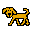
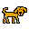
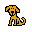
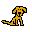
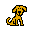

<!DOCTYPE>
<body>
  <style>
    body {
      padding: 0;
      margin: 0;
      display: flex;
      align-items: center;
      justify-content: center;
      height: 100%;
    }
    html {
      background-color: darkgreen;
    }
  </style>
  <canvas></canvas>
  <div id='build-panel'></div>
  <div style='display: none'>
    </img>
    </img>
    </img>
    </img>
    </img>
    </img>
    </img>
    </img>
    </img>
    </img>
    </img>
  </div>
  <script type='module'>
    'use strict'
    import { astar, Graph } from './astar.js'
    const canvas = document.querySelector('canvas')
    canvas.width = 800
    canvas.height = 400
    const ctx = canvas.getContext('2d')
    window.ctx = ctx

    // character state is either:
    //   idle
    //   moving
    //   if moving, we know delta between current game tick and when begun moving, so we know which animation cycle were in and what the positioning is

    /* TODO:

      Late:
      - Implement idle after a while
      - Don't implement multi-party committing or smarter group target picking for now

    */

    const tileSize = 48
    const worldWidth = 30
    const worldHeight = 20
    const viewportTileWidth = 20
    const viewportTileHeight = 13
    const singleTileMoveDuration = 400
    const tickInterval = 400

    const shuffleArray = (array) => {
      for (let i = array.length - 1; i > 0; i--) {
        const j = Math.floor(Math.random() * (i + 1));
        [array[i], array[j]] = [array[j], array[i]];
      }
    }

    let mousePos = {
      vX: 0, vY: 0
    }

    canvas.addEventListener('mousemove', (e) => {
      const vX = e.clientX - canvas.offsetLeft
      const vY = e.clientY - canvas.offsetTop
      mousePos = {
        vX,
        vY,
      }
    })

    const vToT = ({ vX, vY }, state) => {
      return { tX: Math.floor((vX - state.offsetLeft) / tileSize), tY: Math.floor((vY - state.offsetTop) / tileSize)}
    }
    const tToV = ({ tX, tY }, state) => {
      return { vX: tX * tileSize + state.offsetLeft, vY: tY * tileSize + state.offsetTop }
    }

    let downEvent = undefined
    let dragging = false

    canvas.addEventListener('mousedown', e => {
      downEvent = e
    }, true)

    canvas.addEventListener('mouseup', e => {
      if (!dragging) {
        const vX = e.clientX - canvas.offsetLeft
        const vY = e.clientY - canvas.offsetTop
        state.clicked = {
          vX,
          vY,
        }
      }
      downEvent = undefined
      dragging = false
      state.mouseDragging = undefined
      state.userMode = undefined
    }, true)

    canvas.addEventListener('mousemove', e => {
      if (downEvent) {
        if (!dragging) {
          const draggedHorisontally = Math.abs(e.clientX - downEvent.clientX) > 10
          const draggedVertically = Math.abs(e.clientY - downEvent.clientY) > 10
          if (draggedHorisontally || draggedVertically) {
            dragging = true
          }
        }
        if (dragging) {
          let fromVX = downEvent.clientX - canvas.offsetLeft
          let fromVY = downEvent.clientY - canvas.offsetTop
          let toVX = e.clientX - canvas.offsetLeft
          let toVY = e.clientY - canvas.offsetTop
          state.mouseDragging = {
            fromVX,
            fromVY,
            toVX,
            toVY
          }
        }
      }
    }, true)


    const render = (state) => {
      canvas.width = tileSize * viewportTileWidth
      canvas.height = tileSize * viewportTileHeight

      ctx.beginPath()
      ctx.rect(0, 0, canvas.width, canvas.height)
      ctx.fillStyle = 'black'
      ctx.fill()

      for (let tX = 0; tX < worldWidth; tX++) {
        for (let tY = 0; tY < worldHeight; tY++) {
          ctx.beginPath()
          ctx.rect(tX * tileSize + state.offsetLeft, tY * tileSize + state.offsetTop, tileSize, tileSize)
          ctx.fillStyle = tY % 2 === 1 ? (tX % 2 === 1 ? '#00e208' : '#03ce13') : (tX % 2 === 0 ? '#00e208' : '#03ce13')
          ctx.fill()
        }
      }
      if (state.selected.length > 0) {
        for (let unit of state.selected) {
          ctx.strokeStyle = 'rgba(255, 255, 255, 0.7)'
          ctx.lineWidth = 2
          ctx.strokeRect(unit.x, unit.y, tileSize, tileSize)
        }
      }
      for (let unit of state.units) {
        unit.unitInfo.render(unit)
      }
      for (let building of state.buildings) {
        building.buildingInfo.render(building)
      }
      for (let item of state.items) {
        item.itemInfo.render(item)
      }
      {
        ctx.beginPath()
        ctx.fillStyle = '#2b180d'
        ctx.rect(canvas.width - 150, 0, canvas.width, 22)
        ctx.fill()
        ctx.textBaseline = 'top'
        ctx.fillStyle = '#c8b89d'
        ctx.textAlign = 'right'
        ctx.font = '16pt monospace';
        ctx.fillText(state.money, canvas.width - 5, 0)

      }
      if (state.placing !== undefined) {
        ctx.beginPath()
        const mouseTile = vToT(mousePos, state)
        ctx.rect(mouseTile.tX * tileSize + state.offsetLeft, mouseTile.tY * tileSize + state.offsetTop, tileSize, tileSize)
        ctx.fillStyle = 'rgba(255, 255, 255, 0.4)'
        ctx.fill()
      }
      if (state.mouseDragging && state.userMode === 'selecting') {
        ctx.beginPath()
        ctx.strokeStyle = 'white'
        ctx.lineWidth = 2
        let { fromVX, fromVY, toVX, toVY } = state.mouseDragging
        ctx.strokeRect(fromVX, fromVY, toVX - fromVX, toVY - fromVY)
        ctx.lineWidth = 1
      }
    }


    const renderUnit = (unit) => {
      const { sprite, x, y } = unit
      ctx.drawImage(sprite, x, y, tileSize, tileSize)
    }

    const renderBuilding = (building) => {
      let {x, y, sprite} = building
      ctx.drawImage(sprite, x, y, tileSize, tileSize)
    }


    const getUnitsInfo = () => {
      let unitsInfo = []
      unitsInfo.push({
        type: 'cop',
        hasDirectionalSprites: true,
        render: renderUnit,
        spriteSets: {
          'idle': {
            'left': {
              sprites: [0, 1].map(i => document.querySelector('#cop-sit-left' + i)),
              animationDuration: 500,
            },
            'right': {
              sprites: [0, 1].map(i => document.querySelector('#cop-sit-right' + i)),
              animationDuration: 500,
            },
          },
          'idleWhileMoving': {
            'left': {
              sprites: [0, 1].map(i => document.querySelector('#cop-sit-left' + i)),
              animationDuration: 500,
            },
            'right': {
              sprites: [0, 1].map(i => document.querySelector('#cop-sit-right' + i)),
              animationDuration: 500,
            },
          },
          'moving': {
            'left': {
              sprites: [1, 2, 3].map(i => document.querySelector('#cop-move-left' + i)),
              animationDuration: 200,
            },
            'right': {
              sprites: [1, 2, 3].map(i => document.querySelector('#cop-move-right' + i)),
              animationDuration: 200,
            },
          },
        },
        cost: 100,
      })
      return unitsInfo
    }

    const unitsInfo = getUnitsInfo()

    const getBuildingsInfo = () => {
      let buildings = []
      const hq = {
        type: 'hq',
        requires: [],
        spriteSets: {
          sprites: [document.querySelector('#hq')],
          animationDuration: 1000
        },
        render: renderBuilding,
      }
      const barracks = {
        type: 'barracks',
        requires: [hq],
        spriteSets: {
          sprites: [document.querySelector('#hq')],
          animationDuration: 1000
        },
        render: renderBuilding,
        canBuild: [unitsInfo[0]],
      }
      const lightFactory = {
        type: 'light-factory',
        requires: [barracks],
      }
      return [hq, barracks, lightFactory]
    }

    const buildingsInfo = getBuildingsInfo()

    const getItemsInfo = () => {
      let items = []
      const mountain = {
        type: 'mountain',
        spriteSets: {
          sprites: [document.querySelector('#hq')],
          animationDuration: 1000
        },
        render: renderBuilding,
      }
      items.push(mountain)
      return items
    }

    const itemsInfo = getItemsInfo()

    const getInitialUnits = () => {
      return [
        {
          unitInfo: unitsInfo[0],
          state: 'idle',
          timeStateEntered: Date.now(),
          idealPath: [],
          in: {tX: 5, tY: 6},
        },
        {
          unitInfo: unitsInfo[0],
          state: 'idle',
          timeStateEntered: Date.now(),
          idealPath: [],
          in: {tX: 6, tY: 6},
        },
        {
          unitInfo: unitsInfo[0],
          state: 'idle',
          timeStateEntered: Date.now(),
          idealPath: [],
          in: {tX: 1, tY: 6},
        },
        {
          unitInfo: unitsInfo[0],
          state: 'idle',
          timeStateEntered: Date.now(),
          idealPath: [],
          in: {tX: 8, tY: 6},
        },
        {
          unitInfo: unitsInfo[0],
          state: 'idle',
          timeStateEntered: Date.now(),
          idealPath: [],
          in: {tX: 2, tY: 6},
        }
      ]
    }

    const getInitialBuildings = () => {
      return [
        {
          buildingInfo: buildingsInfo[1],
          pos: {tX: 1, tY: 2},
        }
      ]
    }

    const getInitialItems = () => {
      return [
        {
          itemInfo: itemsInfo[0],
          pos: {tX: 5, tY: 5}
        }
      ]
    }

    let state = {
      time: Date.now(),
      lastTick: 0,
      units: getInitialUnits(),
      actions: [],
      buildings: getInitialBuildings(),
      items: getInitialItems(),
      selected: [],
      offsetTop: 20,
      offsetLeft: 20,
      money: 1000,
    }
    window.state = state


    const buildPanelDiv = document.querySelector('#build-panel')
    buildPanelDiv.innerHTML = ''
    for (let buildingInfo of buildingsInfo) {
      let p = document.createElement('p')
      p.innerText = buildingInfo.type
      p.addEventListener('click', () => {
        state.clickedToBuildBuilding = buildingInfo
      }, true)
      buildPanelDiv.appendChild(p)
    }
    for (let unitInfo of unitsInfo) {
      let p = document.createElement('p')
      p.innerText = unitInfo.type
      p.addEventListener('click', () => {
        state.clickedToBuildUnit = unitInfo
      }, true)
      buildPanelDiv.appendChild(p)
    }
    let p = document.createElement('p')
    p.innerText = 'Select'
    p.addEventListener('click', () => {
      state.userMode = 'selecting'
    }, true)
    buildPanelDiv.appendChild(p)

    const getGameGraph = (state, to, from) => {
      let graph = (new Array(worldWidth)).fill(0).map(row => (new Array(worldHeight)).fill(1))
      state.buildings.concat(state.items).forEach(x => {
        graph[x.pos.tX][x.pos.tY] = 0
      })
      state.units.filter(u => u.state === 'idle' || u.state === 'idleWhileMoving').forEach(x => {
        // Make other stationary units a mild obstacle
        graph[x.in.tX][x.in.tY] = 20
      })
      // Pretend the goal is acheivable so they don't give up if somebody is sat on it, and don't assume they're stuck where they are because they're sat on a square :)
      graph[to.tX][to.tY] = 1
      graph[from.tX][from.tY] = 1
      return graph
    }

    const getPathFromTo = (from, to, state) => {
      let graph = getGameGraph(state, to, from)
      // console.log({from, to, graph})
      graph = new Graph(graph, { diagonal: true })
    	let start = graph.grid[from.tX][from.tY]
    	let end = graph.grid[to.tX][to.tY]
    	let result = [from].concat(astar.search(graph, start, end, { heuristic: astar.heuristics.diagonal }).map(node => { return { tX: node.x, tY: node.y } }))
      return result
    }

    const isPosSame = (posA, posB) => posA.tX === posB.tX && posA.tY === posB.tY

    const posToPrettyPrint = (pos) => [pos.tX, pos.tY]

    const isTileBlockedByEnvironment = (state, tile) => {
      const tileIsOffEdge = tile.tX < 0 || tile.tY < 0 || tile.tX >= worldWidth || tile.tY >= worldHeight
      return tileIsOffEdge || state.buildings.concat(state.items).filter(x => isPosSame(x.pos, tile)).length > 0
    }

    const destructivelyUpdateState = (state) => {
      let now = Date.now()

      const convertUserInputToActions = (state) => {
        if (state.clicked !== undefined) {
          if (state.placing !== undefined) {
            state.actions.push({
              type: 'buildBuilding',
              buildingInfo: state.placing,
              pos: vToT(state.clicked, state),
            })
            state.placing = undefined
          } else {
            const nearbyUnits = state.units.filter(unit => Math.abs(unit.x + tileSize / 2 - state.clicked.vX) < tileSize / 2 && Math.abs(unit.y + tileSize / 2 - state.clicked.vY) < tileSize / 2)
            let unitClicked
            if (nearbyUnits.length > 0) {
              unitClicked = nearbyUnits[0]
            }
            if (state.selected.length === 0) {
              if (unitClicked) {
                state.selected = [unitClicked]
              }
            } else { // something is already selected
              if (state.selected.length === 1 && state.selected[0] === unitClicked) {
                state.selected = []
              } else { // You clicked on a different tile while having something selected
                // If you clicked on another unit
                if (unitClicked !== undefined) {
                  state.selected = [unitClicked]
                } else {
                  for (let unit of state.selected) {
                    let { tX, tY } = vToT(state.clicked, state)
                    let target = { tX, tY }
                    // TODO: find closest accessible point to target
                    if (state.selected.length > 1) {
                      const nineGridDeltas = [[0, 0], [1, 0], [1, 1], [0, 1], [-1, 1], [-1, 0], [-1, -1], [0, -1], [1, -1]]
                      let allowableTargets = nineGridDeltas.map(d => { return { tX: tX + d[0], tY: tY + d[1] } }).filter(tile => !isTileBlockedByEnvironment(state, tile))
                      const random = (from, to) => Math.floor(from + Math.random()*(to-from+1))
                      let target = allowableTargets[random(0, allowableTargets.length-1)]
                    }
                    state.actions.push({
                      type: 'moveUnit',
                      unit,
                      moveTo: target,
                    })
                  }
                }
              }
            }
          }
        }
        state.clicked = undefined

        if (state.mouseDragging) {
          let { fromVX, fromVY, toVX, toVY } = state.mouseDragging
          if (state.userMode === 'selecting') {
            if (fromVX > toVX) {
              [fromVX, toVX] = [toVX, fromVX]
            }
            if (fromVY > toVY) {
              [fromVY, toVY] = [toVY, fromVY]
            }
            state.selected = state.units.filter(unit => unit.x + tileSize / 2 > fromVX && unit.x + tileSize / 2 < toVX && unit.y + tileSize / 2 > fromVY && unit.y + tileSize / 2 < toVY)
          } else {
            state.offsetTop = state.lastOffsetTop + toVY - fromVY
            state.offsetLeft = state.lastOffsetLeft + toVX - fromVX
          }
        } else {
          state.lastOffsetTop = state.offsetTop
          state.lastOffsetLeft = state.offsetLeft
        }

        // Convert other clicks into game state and actions
        if (state.clickedToBuildBuilding !== undefined) {
          state.placing = state.clickedToBuildBuilding
        }
        state.clickedToBuildBuilding = undefined
        if (state.clickedToBuildUnit !== undefined) {
          if (state.clickedToBuildUnit.cost <= state.money) {
            const buildingsThatCanBuildUnit = state.buildings.filter(building => building.buildingInfo.canBuild && building.buildingInfo.canBuild.indexOf(state.clickedToBuildUnit) > -1)
            console.log(buildingsThatCanBuildUnit)
            if (buildingsThatCanBuildUnit.length > 0) {
              state.actions.push({
                type: 'buildUnit',
                building: buildingsThatCanBuildUnit[0],
                unitInfo: state.clickedToBuildUnit,
              })
              state.money -= state.clickedToBuildUnit.cost
            }
          }
        }
        state.clickedToBuildUnit = undefined
      }

      const convertActionsToState = (state) => {
        if (state.actions.length > 0) {
          console.log(state.actions)
          for (let action of state.actions) {
            if (action.type === 'moveUnit') {
              let unit = action.unit
              // If the unit was moving, cancel it's planned movements after it completes the tile in progress
              if (unit.state === 'moving') {
                console.log(unit.from, unit.in, unit.idealPath[0])
                unit.idealPath = [unit.from].concat(getPathFromTo(unit.in, action.moveTo, state))
              } else if (unit.state === 'idle' || unit.state === 'idleWhileMoving') {
                unit.idealPath = getPathFromTo(unit.in, action.moveTo, state)
                unit.timeStateEntered = now
              }
            } else if (action.type === 'buildBuilding') {
              state.buildings.push({
                buildingInfo: action.buildingInfo,
                pos: action.pos,
              })
            } else if (action.type === 'buildUnit') {
              state.units.push({
                unitInfo: action.unitInfo,
                idealPath: [],
                in: {tX: action.building.pos.tX+1, tY: action.building.pos.tY},
              })
            }
          }
        }

        state.actions = []
      }

      const setDefaultPropertiesOnObjects = (state) => {
        // Tidy up units to make sure they have all the required fields
        for (let unit of state.units) {
          unit.timeStateEntered = unit.timeStateEntered || Date.now()
          unit.state = unit.state || 'idle'
          unit.direction = unit.direction || 'right'
        }
        // Ensure all buildings have appropriate sprites
        for (let building of state.buildings) {
          let {vX, vY} = tToV(building.pos, state)
          building.x = vX
          building.y = vY
          building.sprite = building.buildingInfo.spriteSets.sprites[0]
        }
        // Ensure all items have appropriate sprites
        for (let item of state.items) {
          let {vX, vY} = tToV(item.pos, state)
          item.x = vX
          item.y = vY
          item.sprite = item.itemInfo.spriteSets.sprites[0]
        }
      }

      const recalculatePaths = (state) => {
        for (let unit of state.units) {
          if (unit.idealPath.length >= 2 && (unit.state === 'idleWhileMoving' || unit.state === 'moving')) {
            // TODO: I think there's a bug in here - when I had this set to append the current path 0 to the path from 1 the units stopped jumping
            if (unit.from === undefined) {
              console.log('undefined from', unit)
            }
            let potentialNewPath
            if (unit.state === 'idleWhileMoving') {
              potentialNewPath = getPathFromTo(unit.in, unit.idealPath[unit.idealPath.length-1], state)
            }  else if (unit.state === 'moving') {
              potentialNewPath = [unit.from].concat(getPathFromTo(unit.in, unit.idealPath[unit.idealPath.length-1], state))
            }
            // If no path is currently visible due to other units, don't remove the old path
            if (potentialNewPath.length >= 2) {
              let pathIsSame = true
              for (let i = 0; i < unit.idealPath.length; i++) {
                if (!isPosSame(unit.idealPath[i], potentialNewPath[i])) {
                  pathIsSame = false
                  break
                }
              }
              if (!pathIsSame) {
                console.log('setting new path', JSON.stringify(potentialNewPath.map(posToPrettyPrint)), 'to replace', JSON.stringify(unit.idealPath.map(posToPrettyPrint)))
                unit.idealPath = potentialNewPath
              }
            }
          }
        }
      }

      const doUnitMovement = (state) => {
        const setProposedForUnits = (state) => {
          for (let unit of state.units) {
            const movementPerc = (now - unit.timeStateEntered) / singleTileMoveDuration
            if (unit.state === 'moving' && movementPerc < 1) {
              unit.proposedNext = {
                state: 'moving',
                from: unit.from,
                in: unit.in,
                committed: true,
              }
            } else if (unit.state === 'moving' && movementPerc >= 1) {
              unit.idealPath = unit.idealPath.slice(1)
              // console.log(JSON.stringify(unit.idealPath))
              const moreMovementIdeallyPlanned = unit.idealPath.length > 1
              // TODO: I think there's a bug here. in may be incompatible with from
              if (moreMovementIdeallyPlanned) {
                unit.proposedNext = {
                  state: 'moving',
                  in: unit.idealPath[1],
                  from: unit.in,
                }
              } else {
                unit.proposedNext = {
                  state: 'idle',
                  in: unit.in,
                }
              }
            } else if (unit.state === 'idle' && unit.idealPath.length > 0 || unit.state === 'idleWhileMoving') {
              // User clicked to have you move to the same space you're already in!
              if (unit.idealPath[1] === undefined) {
                unit.proposedNext = {
                  state: 'idle',
                  in: unit.in,
                }
              } else {
                unit.proposedNext = {
                  state: 'moving',
                  in: unit.idealPath[1],
                  from: unit.in,
                }
              }
            } else if (unit.state === 'idle') {
              unit.proposedNext = {
                state: 'idle',
                in: unit.in,
              }
            }
            if (unit.proposedNext === undefined) throw new Error('No proposed state', unit)
          }
        }

        const resolveUnitMovementDisagreementsAndCommit = (state) => {

          // If unitB is currently in proposedNext
            // If unitB is uncomitted and here due to a different user action
              // unitB must propose to move. Pick an empty square if available. If not available, recurse


          let i = 0
          // Resolve contradictory nexts
          // console.log('resolving', JSON.parse(JSON.stringify(state.units)))
          while (state.units.filter(unit => unit.proposedNext.committed !== true).length > 0) {
            for (let unit of state.units.sort((uA, uB) => uA.proposedNext.state === 'moving' ? -1 : 0)) {
              if (unit.proposedNext.committed !== true) {
                if (unit.proposedNext.isntCommittable) {
                  if (unit.in === undefined) { throw 'hai' }
                  unit.proposedNext = {
                    state: 'idleWhileMoving',
                    in: unit.in,
                  }
                  // console.log('Resolving conflict by waiting a tick', unit, unit.proposedNext)
                }
                // if (state.units.filter(u => u.proposedNext.in === undefined).length > 0) {
                //   console.log(state.units.filter(u => u.proposedNext.in === undefined)[0])
                //   throw 'A unit has no proposedNext in'
                // }

                const unitsInProposedNext = (unit) => state.units.filter(unitB => unitB !== unit && isPosSame(unit.proposedNext.in, unitB.in))
                const proposedNextHasUncomittedUnitCurrently = (unit) => unitsInProposedNext(unit).filter(u => u.proposedNext.committed !== true).length > 0
                const unitInProposedNextWasMovedByDifferentUserAction = true
                const unitsComittedToBeInProposedNext= (unit) => state.units.filter(unitB => unitB !== unit && unitB.proposedNext.committed && isPosSame(unit.proposedNext.in, unitB.proposedNext.in))
                const proposedNextHasComittedProposal = (unit) => unitsComittedToBeInProposedNext(unit).length > 0
                // TODO: this should include checking that the position isn't blocked by an obstacle or off the edge of the world
                const unitCanCommitImmediately = (unit) => proposedNextHasUncomittedUnitCurrently(unit) === false && proposedNextHasComittedProposal(unit) === false

                if (proposedNextHasComittedProposal(unit)) {
                  unit.proposedNext.isntCommittable = true
                } else if (unitCanCommitImmediately(unit)) {
                  unit.proposedNext.committed = true
                    // console.log('Commit', JSON.parse(JSON.stringify({unit, unitsInProposedNext(unit), unitsComittedToBeInProposedNext(unit)})))
                } else if (proposedNextHasUncomittedUnitCurrently(unit) && unitInProposedNextWasMovedByDifferentUserAction) {
                  console.log('Unit cannot commit immediately to', unit.proposedNext, proposedNextHasUncomittedUnitCurrently(unit), proposedNextHasComittedProposal(unit))
                  let unitB = unitsInProposedNext(unit)[0]
                  if (unitB.proposedNext.state === 'moving') {
                    if (unitCanCommitImmediately(unitB)) {
                      unitB.proposedNext.committed = true
                      // nobody is committed to be in proposedNext, and unitB is committed to moving, so we can commit
                      unit.proposedNext.committed = true
                    } else {
                      console.log('Unit B also cannot commit to move immediately, TODO: recursively have it try harder to commit')
                      // Hack for now
                      if (i > 5) {
                        unit.proposedNext.isntCommittable = true
                      }
                    }
                  } else {
                    // We need to ask unitB to move
                    // TODO: prevent unit from pushing another unit that's now idle after being moved as part of the same action
                    console.log('A needs B to move', JSON.parse(JSON.stringify(unit)), JSON.parse(JSON.stringify(unitB)))
                    // TODO: Handle case where unitB cannot commit to any option
                    const nineGridDeltas = [[1, 0], [1, 1], [0, 1], [-1, 1], [-1, 0], [-1, -1], [0, -1], [1, -1]]
                    let allowableTargets = nineGridDeltas.map(d => { return { tX: unitB.in.tX + d[0], tY: unitB.in.tY + d[1] } }).filter(tile => !isTileBlockedByEnvironment(state, tile))
                    // Shuffle to avoid always defaulting to moving right
                    shuffleArray(allowableTargets)
                    for (let target of allowableTargets) {
                      unitB.proposedNext = {
                        state: 'moving',
                        in: target,
                        from: unitB.in,
                      }
                      if (unitCanCommitImmediately(unitB)) {
                        console.log('unitB can commit to moving, so commit both', unit.proposedNext, unitB.proposedNext)
                        unitB.proposedNext.committed = true
                        // nobody is committed to be in proposedNext, and unitB is committed to moving, so we can commit
                        unit.proposedNext.committed = true
                        break;
                      } else {
                        console.log('unitb cannot commit to', target)
                      }
                    }

                  }
                } else { // catchall
                  unit.proposedNext.isntCommittable = true
                }
              }
            }
            // TODO: infinite loops can happen if three+ units are blocked in a circle
            if (i++ > 10) {
              console.error(JSON.parse(JSON.stringify(state.units)))
              throw new Error('Infinite loop')
              break
            }
          }
        }

        setProposedForUnits(state)
        resolveUnitMovementDisagreementsAndCommit(state)

        // Set states to committed proposals
        for (let unit of state.units) {
          delete unit.proposedNext.committed
          if (unit.proposedNext.state !== unit.state || !isPosSame(unit.in, unit.proposedNext.in)) {
            unit.timeStateEntered = now
          }
          Object.assign(unit, unit.proposedNext)
          delete unit.proposedNext
          if (unit.state === 'idle') {
            unit.idealPath = []
          }
        }
      }

      const updateUnitsForRendering = (state) => {
        // Update units screen positions and sprites
        for (let unit of state.units) {
          if (unit.state === 'moving') {
            const movementPerc = Math.min(1, (now - unit.timeStateEntered) / singleTileMoveDuration) // Just in case a game tick hasn't happened in a while, don't go past the end
            unit.x = state.offsetLeft + Math.round((1-movementPerc) * unit.from.tX * tileSize + movementPerc * unit.in.tX * tileSize)
            unit.y = state.offsetTop + Math.round((1-movementPerc) * unit.from.tY * tileSize + movementPerc * unit.in.tY * tileSize)
            unit.direction = unit.in.tX >= unit.from.tX ? 'right' : 'left'
          } else if (unit.state === 'idle' || unit.state === 'idleWhileMoving') {
            unit.x = state.offsetLeft + unit.in.tX * tileSize
            unit.y = state.offsetTop + unit.in.tY * tileSize
          }
          let {sprites, animationDuration} = unit.unitInfo.spriteSets[unit.state][unit.direction]
          let spriteIndex = Math.floor(((now - unit.timeStateEntered + animationDuration) % animationDuration) / animationDuration * sprites.length)
          unit.sprite = sprites[spriteIndex]

          if (unit.x === undefined || unit.y === undefined) throw new Error('Undefined x, y', unit)
        }
        for (let building of state.buildings) {
          let {vX, vY} = tToV(building.pos, state)
          building.x = vX
          building.y = vY
        }
        for (let item of state.items) {
          let {vX, vY} = tToV(item.pos, state)
          item.x = vX
          item.y = vY
        }
      }

      convertUserInputToActions(state)

      // If we have a game tick, as opposed to an animation tick
      if (now - state.lastTick >= tickInterval) {
        state.lastTick = now
        convertActionsToState(state)
        setDefaultPropertiesOnObjects(state)
        recalculatePaths(state)
        doUnitMovement(state)
      }

      updateUnitsForRendering(state)

      state.time = now
    }

    const updateStateAndRender = () => {
      destructivelyUpdateState(state)
      render(state)
      requestAnimationFrame(updateStateAndRender)
    }

    requestAnimationFrame(updateStateAndRender)
    // setInterval(updateStateAndRender, tileSize)
    updateStateAndRender()
  </script>
</body>
